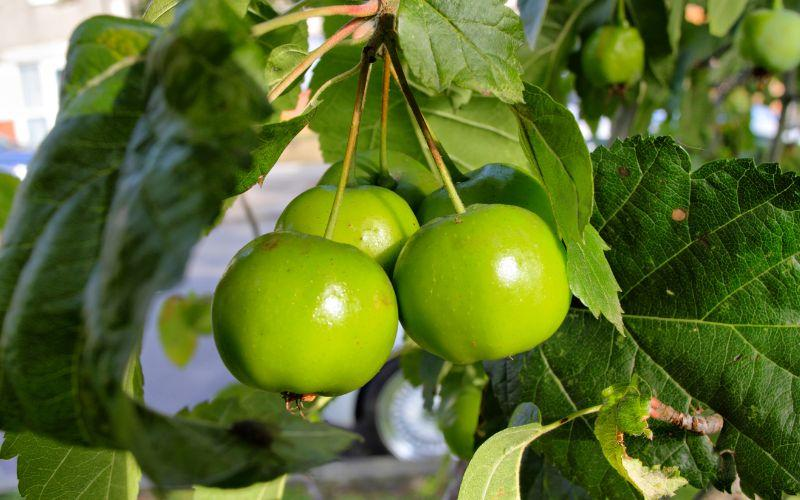
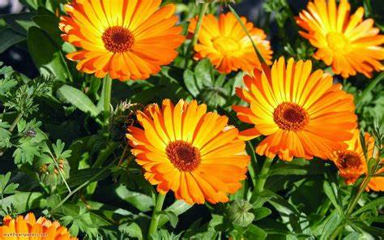
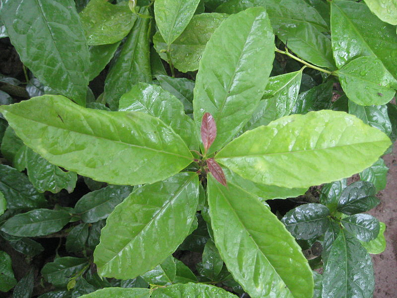
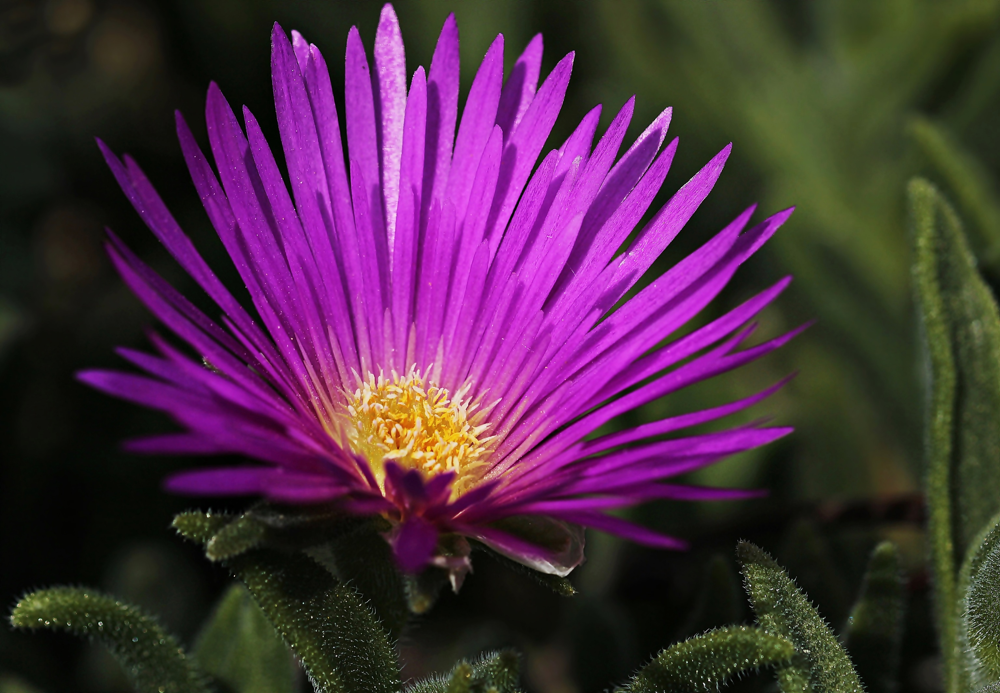
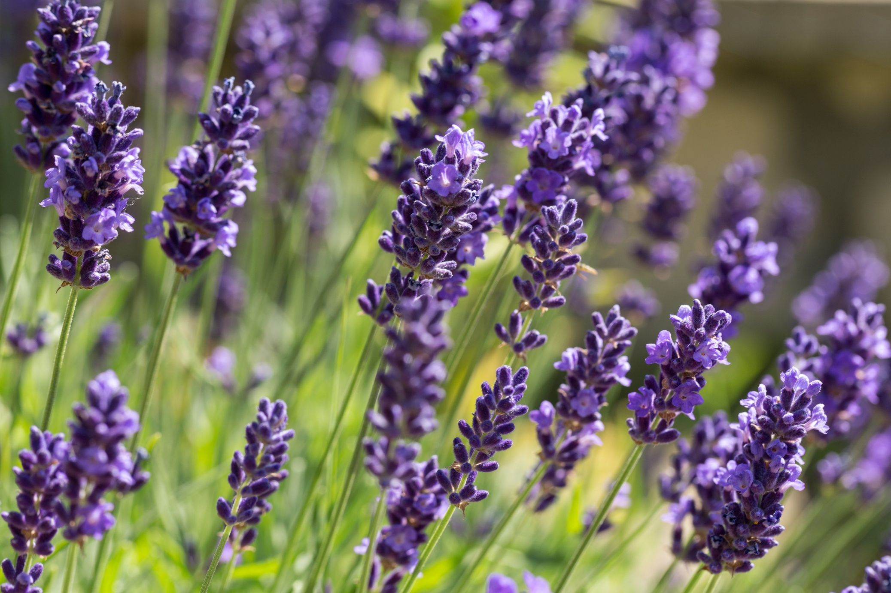
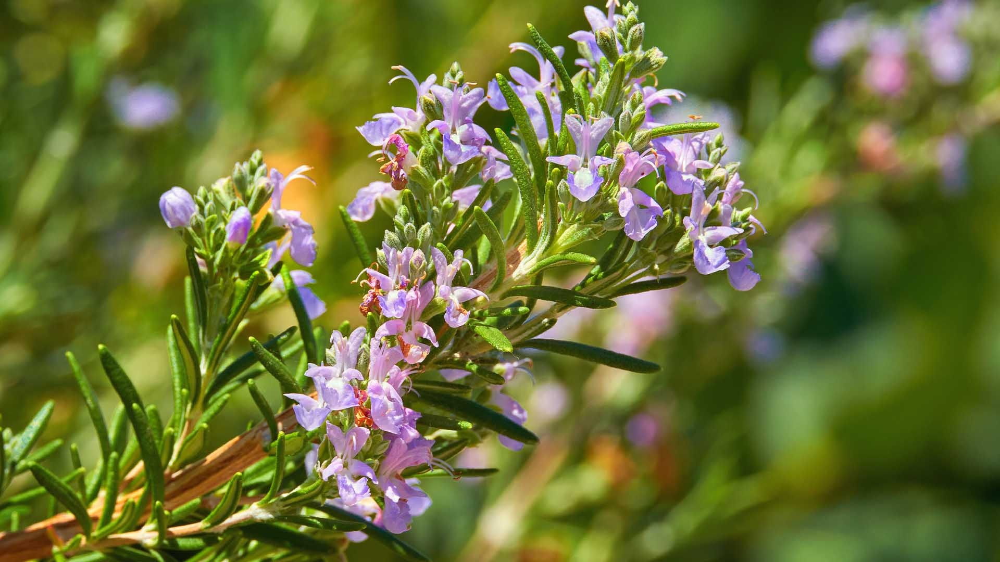
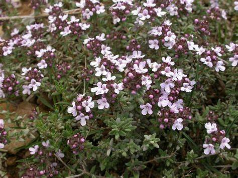
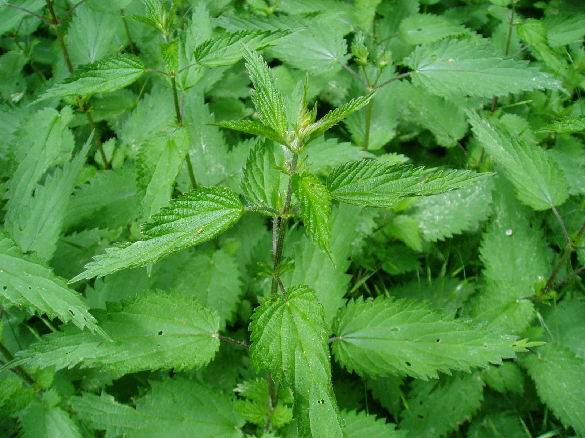
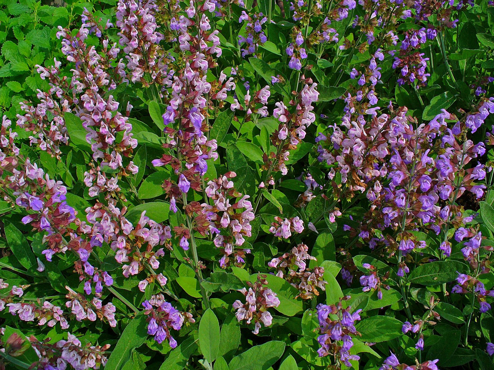
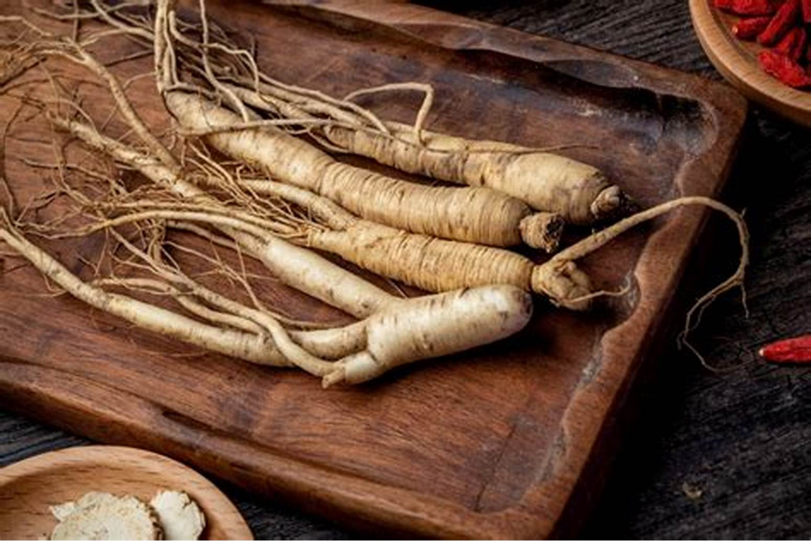

Las plantas medicinales son aquellas especies vegetales que
contienen compuestos químicos naturales con propiedades terapéuticas
y que han sido utilizadas a lo largo de la historia para prevenir,
tratar o aliviar diversas enfermedades y afecciones. Estas plantas
han formado una parte integral de la medicina tradicional y
continúan siendo una fuente valiosa de medicamentos en la
actualidad. Su uso puede abarcar desde aplicaciones locales y
tópicas hasta tratamientos internos.
Composición Química y Propiedades
Las plantas medicinales contienen una variedad de principios activos
que les confieren sus propiedades curativas. Estos compuestos
incluyen:
Alcaloides: Compuestos nitrogenados que a menudo
tienen efectos farmacológicos significativos. Ejemplos incluyen la
morfina en el adormidera y la quinina en la quina.
Glicósidos: Compuestos que liberan un azúcar al
ser hidrolizados. Incluyen glucósidos cardíacos, como la digoxina
en la dedalera, que afectan el corazón.
Aceites Esenciales: Mezclas de compuestos
volátiles que aportan aroma y tienen propiedades antimicrobianas y
antiinflamatorias. Ejemplos incluyen el aceite de lavanda y el de
menta.
Saponinas: Compuestos que tienen efectos
expectorantes y antiinflamatorios. Se encuentran en plantas como
la zarzaparrilla.
Taninos: Compuestos con propiedades astringentes
que ayudan en la cicatrización de heridas y el tratamiento de
diarreas. La manzanilla y el roble contienen taninos.
Flavonoides: Antioxidantes naturales que ayudan a
proteger las células del daño oxidativo y pueden tener efectos
antiinflamatorios y antivirales.
Usos y Aplicaciones
Las plantas medicinales se utilizan de diversas maneras, incluyendo:
Infusiones y Decocciones: Preparaciones líquidas
obtenidas al hervir partes de la planta en agua. Se utilizan
comúnmente para extraer las propiedades curativas de hierbas como
la menta y la manzanilla.
Extractos y Tinturas: Soluciones concentradas de
las plantas en alcohol u otros solventes. Estos preparaciones
permiten una dosificación más precisa de los principios activos.
Pomadas y Ungüentos: Preparaciones tópicas que se
aplican directamente sobre la piel para tratar problemas como
quemaduras, infecciones y dolores musculares.
Cápsulas y Tabletas: Formas de dosificación que
contienen extractos de plantas medicinales para tratar diversas
condiciones internas.
Historia y Tradición
El uso de plantas medicinales se remonta a tiempos ancestrales. Las
civilizaciones antiguas, como los egipcios, griegos, romanos, chinos
e indígenas americanos, han documentado y utilizado las propiedades
curativas de diversas plantas. La medicina tradicional, incluyendo
la herbolaria y la fitoterapia, se basa en un conocimiento acumulado
a lo largo de generaciones sobre cómo estas plantas pueden
beneficiar la salud.
Investigación y Ciencia Moderna
En la actualidad, la ciencia moderna investiga las propiedades de
las plantas medicinales para validar y comprender sus efectos. Se
realizan estudios clínicos para confirmar la eficacia y seguridad de
las plantas en el tratamiento de enfermedades. La farmacología
moderna también se basa en los principios activos identificados en
las plantas para desarrollar nuevos medicamentos.
Consideraciones y Precauciones
Aunque las plantas medicinales pueden ofrecer beneficios
significativos, es crucial usarlas con precaución. La concentración
de principios activos puede variar, y algunas plantas pueden
interactuar con medicamentos o causar efectos adversos. Es
recomendable consultar a un profesional de la salud antes de
utilizar plantas medicinales, especialmente en el caso de
condiciones médicas preexistentes o durante el embarazo.
Fotografías
Todo
Plantas Medicinales

Plantas Medicinales
Borojo

Plantas Medicinales
Caléndula
Plantas Medicinales
Coca
Plantas Medicinales
Guayaba

Plantas Medicinales
Guayusa
Plantas Medicinales
Jengibre
Plantas Medicinales
Ruda

Plantas Medicinales
Uña de Gato
Plantas Medicinales
Yagé
Plantas Medicinales
Manzanilla
Plantas Medicinales
Aloe Vera
Plantas Medicinales
Menta
Plantas Medicinales
Valeriana

Plantas Medicinales
Lavanda
Plantas Medicinales
Eucalipto
Plantas Medicinales
Cúrcuma

Plantas Medicinales
Romero

Plantas Medicinales
Tomillo

Plantas Medicinales
Ortiga

Plantas Medicinales
Salvia
Plantas Medicinales
Diente de León

Plantas Medicinales
Ginseng
Plantas Medicinales
Boldo
Plantas Medicinales
Harpagófito
Plantas Medicinales
Sangre de Drago
Testimonios
He estado usando el Borojo para mejorar mi energía y bienestar
en general. Me ha sorprendido lo revitalizante que es.
Recomiendo esta planta a quienes buscan un impulso natural.
Andrés Ramírez
La Caléndula ha sido increíble para mi piel. He utilizado su
extracto para tratar irritaciones y ha hecho maravillas. Su
efecto calmante es notable.
Laura Medina
La Coca ha sido de gran ayuda para mantener mi energía y
concentración. Su uso regular me ha permitido mantenerme
activo durante todo el día.
Juan Pablo Gómez
La Guayaba es excelente para fortalecer el sistema
inmunológico. He notado una mejora en mi salud general desde
que empecé a incluirla en mi dieta.
Claudia Díaz
El Jengibre ha sido muy útil para aliviar problemas
digestivos. Lo uso regularmente en mi dieta y sus beneficios
son evidentes.
Marcelo López
La Ruda ha sido un gran apoyo para mi salud digestiva. Sus
propiedades han mejorado mi bienestar general y es una planta
que siempre tengo a mano.
José Martínez
La Uña de Gato ha sido excelente para fortalecer mi sistema
inmunológico. Es una planta que recomiendo para quienes buscan
un refuerzo natural para la salud.
Paola Torres
El Yagé ha sido útil para mi bienestar emocional. Su uso ha
contribuido a mi equilibrio mental y emocional, siendo una
planta muy beneficiosa para mí.
 Plantas Medicinales
Plantas Medicinales Plantas Medicinales
Plantas Medicinales Plantas Medicinales
Plantas Medicinales Plantas Medicinales
Plantas Medicinales Plantas Medicinales
Plantas Medicinales Plantas Medicinales
Plantas Medicinales Plantas Medicinales
Plantas Medicinales Plantas Medicinales
Plantas Medicinales Plantas Medicinales
Plantas Medicinales Plantas Medicinales
Plantas Medicinales Plantas Medicinales
Plantas Medicinales Plantas Medicinales
Plantas Medicinales Plantas Medicinales
Plantas Medicinales Plantas Medicinales
Plantas Medicinales Plantas Medicinales
Plantas Medicinales{kind=link}
{kind=link}
{kind=link}
{kind=link}
{kind=link}
{kind=link}
{kind=link}
{kind=link}
{kind=link}
{kind=link}